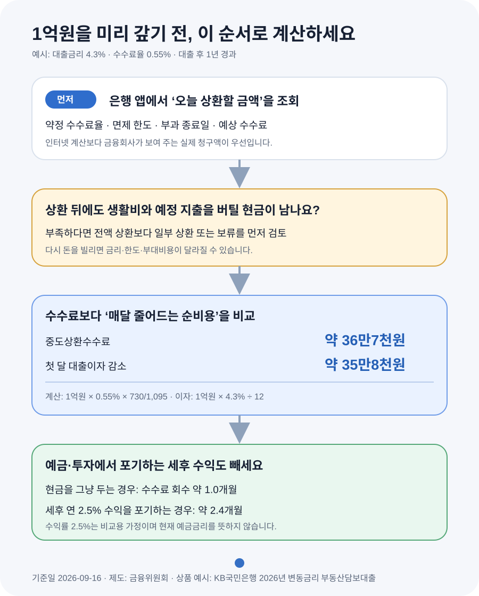

주담대 1억원 미리 갚으면 중도상환수수료를 내도 이득일까?
1억원을 갚을 때 수수료가 약 36만7천원이고 대출금리가 연 4.3%라면, 현금을 그냥 보유하는 경우 첫 달에 줄어드는 이자만 약 35만8천원입니다. 단순 계산으로 수수료를 약 한 달 만에 회수합니다. 다만 이 돈을 예금·투자에 두어 얻을 세후 수익, 상환 뒤 남는 비상자금, 더 금리가 높은 다른 빚을 함께 비교해야 실제 결론이 나옵니다.
먼저 은행 앱에서 오늘 기준 수수료를 조회하세요
목돈이 생기면 많은 사람이 “중도상환수수료가 없어지는 날까지 기다릴까?”부터 고민합니다. 하지만 인터넷에 나온 평균 수수료율만으로는 결론을 낼 수 없습니다. 같은 은행의 주택담보대출도 대출을 받은 날짜, 변동·고정금리 구분, 상품 약정과 올해 사용한 면제 한도에 따라 실제 청구액이 달라집니다.
대출 계좌의 원금상환 메뉴에 상환 예정금액을 입력하면 대부분 예상 수수료와 상환 후 잔액을 확인할 수 있습니다. 바로 실행하지 말고 조회 화면을 캡처하세요. 화면에 수수료가 표시되지 않거나 면제 한도가 불분명하면 상품설명서의 ‘중도상환해약금’ 항목을 확인하고 고객센터에 물어보는 편이 정확합니다.
- 대출 실행일 — 현재 계약에 적용된 수수료율과 부과 종료일을 찾는 기준입니다.
- 오늘 갚을 원금 — 수수료는 전체 대출잔액이 아니라 실제 중도상환하는 금액을 기준으로 계산합니다.
- 예상 중도상환수수료 — 인터넷 공식보다 금융회사가 오늘 청구할 금액을 우선 사용합니다.
- 면제 가능 금액 — 연간 일부 상환 면제가 있더라도 비율과 갱신일은 상품마다 다릅니다.
- 상환 뒤 납부 방식 — 월 납입액이 줄어드는지, 기간이 짧아지는지 금융회사에 확인합니다.
1억원을 갚으면 수수료보다 이자가 얼마나 빨리 줄어들까?
아래는 계산 방법을 보여 주기 위한 예시입니다. 2026년에 실행한 변동금리 주택담보대출에서 1억원을 대출 후 1년 만에 상환한다고 가정했습니다. 대출금리는 연 4.3%, 중도상환수수료율은 0.55%, 수수료 부과기간은 3년으로 두었습니다. 0.55%는 KB국민은행이 2026년 7월 공개한 변동금리 부동산담보대출 사례이며 모든 은행에 공통으로 적용되는 숫자가 아닙니다.
| 계산 항목 | 계산식 | 결과 |
|---|---|---|
| 중도상환수수료 | 1억원 × 0.55% × 730일 ÷ 1,095일 | 약 36만7천원 |
| 첫 달 이자 감소 | 1억원 × 4.3% ÷ 12개월 | 약 35만8천원 |
| 수수료 회수기간 | 36만7천원 ÷ 35만8천원 | 약 1.0개월 |
상환한 원금 1억원에는 다음 날부터 대출이자가 붙지 않습니다. 그래서 돈을 현금으로 그냥 보유할 생각이었다면 이 예시에서는 약 한 달이 지난 뒤부터 이자 절감액이 수수료를 넘어섭니다. ‘수수료 36만7천원을 낸다’는 사실만 보면 손해처럼 보이지만, 비교 대상은 앞으로 계속 낼 대출이자입니다.
다만 35만8천원은 상환 직후 한 달의 단순 이자 감소액입니다. 원리금균등상환이나 원금균등상환에서는 예정 원금도 매달 줄어들기 때문에 전체 만기까지 아끼는 이자는 금융회사의 재산정 방식에 따라 달라집니다. 상환 후 월 납입액을 낮출지, 납입액을 유지해 기간을 줄일지도 확인해야 합니다.
2025년부터 수수료가 바뀌었어도 내 계약이 자동으로 바뀌지는 않습니다
금융소비자보호법 제20조는 중도상환수수료를 원칙적으로 금지하면서, 대출계약이 성립한 날부터 3년 이내에 상환하는 경우 등을 예외로 둡니다. 금융위원회는 2025년 1월 13일부터 은행·저축은행·보험사·신협 등의 신규 대출에 자금운용 차질 비용과 대출 관련 행정·모집비용 등 실제 비용만 반영하도록 제도를 바꿨습니다. 상호금융권에는 2026년 1월 신규 계약부터 같은 취지의 개편이 확대됐습니다.
여기서 중요한 단어는 ‘신규 계약’입니다. 제도가 바뀐 뒤 신규 대출의 수수료율이 낮아졌더라도, 이전에 받은 대출의 약정 수수료율이 자동으로 새 요율로 내려가는 것은 아닙니다. KB국민은행 안내도 대출 신규일에 적용된 수수료율이 대출 기간 동안 유지된다고 설명합니다. 따라서 지금 인터넷에서 본 2026년 요율보다 본인의 약정서와 앱 조회값을 먼저 봐야 합니다.
| 대출 시점 | KB 변동금리 부동산담보대출 사례 | 1년 뒤 1억원 상환 수수료 예시 |
|---|---|---|
| 2025년 1월 12일 이전 | 1.20% | 약 80만원 |
| 2025년 1월 13일~12월 31일 | 0.58% | 약 38만7천원 |
| 2026년 1월 1일 이후 | 0.55% | 약 36만7천원 |
위 표는 KB국민은행이 2026년 7월 16일 기준으로 안내한 부동산담보대출 요율에 같은 계산 조건을 넣은 사례입니다. 고정금리, 다른 은행, 보험·상호금융, 정책대출과 집단대출에는 다른 기준이 적용될 수 있습니다. ‘매년 최초 대출금액의 10%까지 면제’도 KB 안내의 부동산담보대출 조건이므로 모든 주담대의 공통 규칙으로 보아서는 안 됩니다.

예금·투자를 포기한다면 ‘대출금리와 세후 수익률의 차이’로 보세요
상환에 쓸 1억원이 정기예금이나 투자상품에 들어 있다면 대출이자 전부가 순수한 이익은 아닙니다. 상환하면서 포기하는 세후 수익도 빼야 합니다. 비교식은 어렵지 않습니다. ‘대출금리에서 세후 대체수익률을 뺀 값’이 원금을 갚아 얻는 연간 순효과의 출발점입니다.
예를 들어 대출금리 4.3%, 세후 대체수익률 2.5%라고 가정하면 금리 차이는 1.8%포인트입니다. 1억원을 상환했을 때 첫해 순효과를 단순 환산하면 연 180만원, 월 15만원입니다. 수수료 36만7천원을 월 15만원으로 나누면 회수기간은 약 2.4개월로 늘어납니다. 여기서 2.5%는 계산을 보여 주기 위한 가정일 뿐 현재 예금금리나 투자수익을 보장하는 숫자가 아닙니다.
주식처럼 손실 가능성이 있는 기대수익률을 확정 수익처럼 대출금리와 바로 비교하면 안 됩니다. 대출원금을 갚아 줄어드는 약정이자는 확정적인 반면 투자수익은 변동합니다. 비교하려면 세금과 수수료를 뺀 뒤, 손실 가능성과 돈을 언제 다시 써야 하는지도 함께 판단해야 합니다.
계산상 이득이어도 이런 돈까지 넣어 갚지는 마세요
수수료 회수기간이 짧다고 해서 통장 잔액을 모두 대출에 넣는 것이 정답은 아닙니다. 집 수리, 세금, 이사, 출산·교육비처럼 가까운 시기에 확정된 지출이 있다면 그 돈은 상환 재원이 아닙니다. 주담대를 갚은 뒤 급하게 신용대출을 다시 받으면 더 높은 금리와 새로운 심사를 감수할 수 있습니다.
먼저 월 생활비와 예정 지출을 제외하고도 버틸 수 있는 현금을 남깁니다. 필요한 비상자금 규모는 가구의 소득 안정성, 맞벌이 여부, 보험과 예정 지출에 따라 달라 하나의 정답을 제시하기 어렵습니다. 중요한 것은 ‘남은 돈이 부족하면 다시 빌리면 된다’고 가정하지 않는 것입니다. 그때의 대출 규제와 신용상태는 지금과 같다는 보장이 없습니다.
주담대보다 금리가 높은 마이너스통장·신용대출이 있다면 각 대출의 수수료와 금리를 놓고 높은 비용의 빚부터 비교합니다. 반대로 주담대 금리가 낮고, 중도상환에 쓸 돈을 몇 달 안에 계약금이나 잔금으로 써야 한다면 유동성을 지키는 편이 나을 수 있습니다.
전액 상환이 부담스럽다면 ‘면제금액 안에서 일부 상환’부터 확인하세요
결론이 애매할 때는 대출을 한꺼번에 없애는 선택만 있는 것이 아닙니다. 은행 앱에서 수수료 없이 갚을 수 있는 금액이 있는지 먼저 확인하고, 비상자금을 제외한 범위에서 일부만 상환할 수 있습니다. 일부 상환액에도 수수료가 붙는 상품이 있으므로 금액을 여러 번 쪼갠다고 자동으로 수수료가 줄어드는 것은 아닙니다.
예를 들어 최초 대출금액의 일정 비율을 매년 면제하는 약정이 있다면 올해 남은 면제한도부터 쓰는 방법을 검토할 수 있습니다. 하지만 사용하지 않은 한도가 다음 해로 이월되는지, ‘1년’이 대출 실행일 기준인지 달력연도 기준인지도 상품마다 다릅니다. KB 안내 사례에서는 해당 연도에 쓰지 않은 10% 면제한도가 다음 해로 넘어가지 않는다고 설명합니다.
일부 상환 뒤에는 다음 달 원리금, 남은 만기, 자동이체 금액이 어떻게 바뀌는지 확인하세요. 금융회사가 월 납입액을 낮추는 방식으로 재산정하면 생활비 부담은 줄지만, 같은 납입액을 유지하며 기간을 단축하는 경우와 전체 이자 절감액이 다를 수 있습니다.
더 싼 대출로 갈아탈 계획이라면 새 비용까지 한 표에 넣으세요
중도상환은 여유자금으로 원금을 줄이는 일이고, 대환은 기존 대출을 갚고 새 대출로 바꾸는 일입니다. 대환에서는 기존 대출의 중도상환수수료뿐 아니라 새 대출의 인지세·담보 관련 비용, 우대금리 조건과 향후 수수료까지 확인해야 합니다. 금리 차이만 보고 갈아타면 예상보다 절감액이 작을 수 있습니다.
단순 비교는 ‘기존 금리와 새 금리의 차이 × 갈아탈 원금’에서 시작하되, 원금이 매달 줄어드는 상환 방식이면 전체 절감액도 함께 줄어듭니다. 은행이 제시한 상환예정표를 기존 대출과 새 대출 각각 받아 같은 기간의 원리금과 비용을 비교하세요. 곧 집을 팔거나 다시 대출을 바꿀 계획이라면 새 대출의 중도상환 조건도 빠뜨리면 안 됩니다.
상환 버튼을 누르기 전에 확인할 것
- □ 은행 앱에 상환 예정금액을 넣어 오늘 청구될 수수료를 확인했다.
- □ 대출 실행일, 약정 수수료율, 부과 종료일과 남은 면제금액을 확인했다.
- □ 상환 뒤에도 생활비와 가까운 시기의 큰 지출을 감당할 현금을 남겼다.
- □ 주담대보다 금리가 높은 다른 대출의 상환 우선순위를 비교했다.
- □ 대출이자 절감액에서 포기하는 세후 예금·투자수익을 뺐다.
- □ 수수료를 회수하는 기간 안에 이 돈을 다시 쓸 계획이 없는지 확인했다.
- □ 일부 상환 뒤 월 납입액과 남은 만기가 어떻게 바뀌는지 확인했다.
- □ 대환이라면 새 대출의 부대비용과 우대금리 유지조건까지 비교했다.
공식 자료
- 국가법령정보센터 — 금융소비자보호법 제20조(불공정영업행위의 금지)
- 국가법령정보센터 — 금융소비자 보호에 관한 감독규정
- 금융위원회 — 2025년 1월 13일 신규 대출부터 중도상환수수료율 인하
- 금융위원회 — 2026년부터 달라지는 금융제도
- KB국민은행 — 2026년 중도상환수수료 계산·요율·면제조건 안내
정보 기준일: 2026-09-16. 계산 예시는 수수료 구조를 이해하기 위한 단순 추정이며 특정 상품 가입이나 상환을 권유하지 않습니다. 실제 수수료, 이자 절감액, 상환 후 납부방식과 면제조건은 금융회사·상품·대출 실행일에 따라 달라집니다. 상환 전 해당 금융회사의 예상 수수료와 상환예정표를 확인하세요.
상환 전 숫자를 다시 계산해 보세요
- 대출 상환방식 비교 계산기원리금균등·원금균등의 월 납입액과 총이자 비교
- DSR 계산기기존 대출을 줄인 뒤 연간 원리금 부담 확인